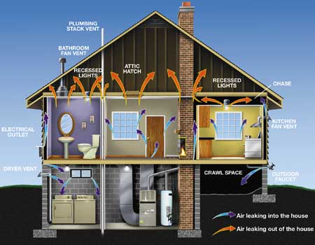

Finding money for home energy improvements is getting easierbecause many lending institutions now offer mortgages designed tocover the cost of energy upgrades.
Energy-efficient homes require less energy to heat and cool, sothey are less affected by sudden spikes in energy prices. Becausethey consume less fossil fuel, energy-efficient homes alsocontribute less to global warming.
However, energy efficiency may come with a higher initial price tag? whether it's a new home with the latest technology or an existinghome remodeled with energy improvements, such as added insulationor a more efficient furnace. While most such homes eventually payfor themselves through lower energy bills, they might be difficultto afford initially, and that's where an Energy Efficient Mortgage(EEM) can help.
These mortgages help you purchase an energy-efficient new home orpay for energy upgrades to an existing home. EEMs are availablethrough many government-insured loan programs and from conventionallenders. Energy Star, a government program that encourages energyefficiency, also is promoting these loans.
Brian Ng, the Energy Star for Homes Finance Coordinator, says EEMshave the potential to reduce a homeowner's bills. 'Say the energyimprovements cost the homeowner an additional $20 a month inmortgage payment, but the improvements save $40 a month in utilitybills. Thus, the improvements end up more than paying forthemselves, the homeowner saves money and less energy is consumed,'Ng says.
To qualify for most EEMs, the home you're purchasing needs acertified energy evaluation to show that it's already energyefficient or to identify specific cost-effective improvements thatshould be made. Ng says this process benefits home buyers. 'They'renot only getting additional money to pay for improvements, they'realso getting assurance that the improvements actually will pay offin energy savings.'
Dave Hepfler, a building performance specialist in Eau Claire,Wis., says the home evaluation process is important because ithelps pinpoint what measures would improve building performance.'Working with a consultant may save you lots of time, effort andmoney,' Hepfler says. The improvements he frequently recommendsinclude air sealing measures, additional insulation andenergy-efficient furnaces, water heaters or air conditioners.
Hepfler is enthusiastic about EEMs. 'I really feel this is a hugeopportunity for first-time homeowners, because they're usuallylooking at older buildings with myriad energy issues. We can offerideas about what might benefit the building the most, and EEMs canmake the money available.'
Some state or local programs offer incentives for home energyupgrades, so check what's available in your area. Plus,energy-efficiency improvements during 2006 and 2007 are eligiblefor federal tax credits, helping you save even more money. (SeeGet Cash Back for Energy Improvements atwww.MotherEarthNews.com.)
Resources
Energy Star
www.energystar.gov/
Find home energy raters, energy incentives and lenders offeringEEMs by choosing the page for new homes, then searching by statewith the partner locater.
U.S. Department of Energy
www.eere.energy.gov/
Choose 'energy-efficient financing' for more
information on EEMs.
|
 With information from an energy audit, you may be able to qualify for a special mortgage that can finance energy improvements. |
|
|